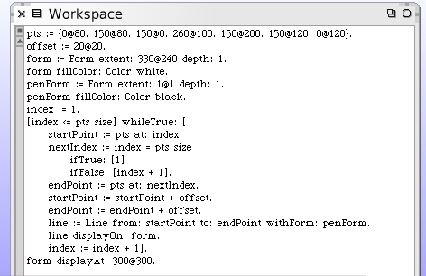
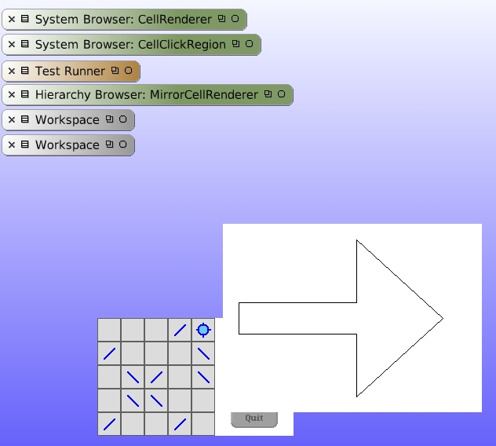
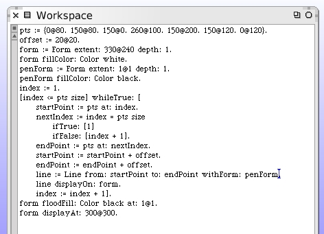
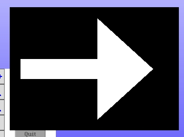
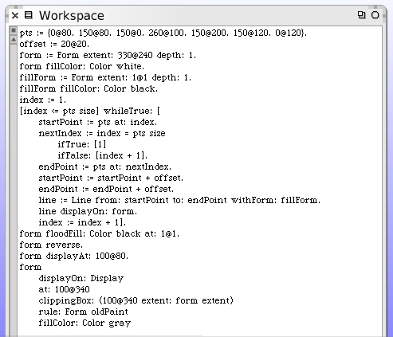
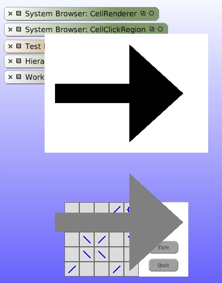

Creating Custom Forms
Our goal is to create visual "hints" as the user hovers the cursor over certain game cells. For the Mirror Cells we can show "hints" when clockwise and counter-clockwise rotation is possible, and then the cell can be pushed either north, east, south or west. The easiest way to do this is utilize the click-region code we just wrote and draw the hints as forms on top of the game board.
We will want a repository of these forms and we will of course need the forms themselves. Let's begin by drawing some forms for our eventual use. The easiest forms to draw are arrows. We will begin with those.
Using a new open workspace, we will write some basic drawing steps to render our experimental arrow on the display.
This workspace code describes an arrow as a series of connected points. The points are defined in the "pts" variable. A white form large enough to contain the arrow is created. Using a black pen, the arrow outline is drawn onto the form. The last line draws our form, containing the arrow drawing, onto the display.
Add a line of code to color fill the outer region of the form with black.
We now have a white arrow on a black background.
To show our progress, draw the intermediate form and the new final form. The last two steps are to reverse the form so that black and white exchange with each other. This is done because in the next step only the pixels that are black will be painted onto the display. The final arrow gets filled in with gray.
Before you execute this code be certain to "restore display" from the World menu.
Our experimental gray arrow is shown without the distracting surrounding rectangle. This form is considerable larger than we will need. I'd like to work at this scale for these forms and then shrink them down before we use them.